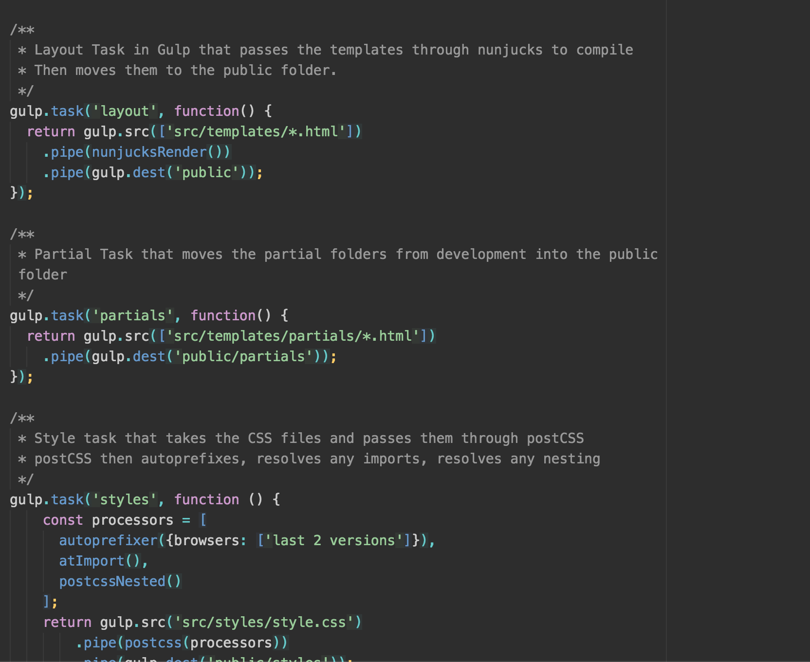
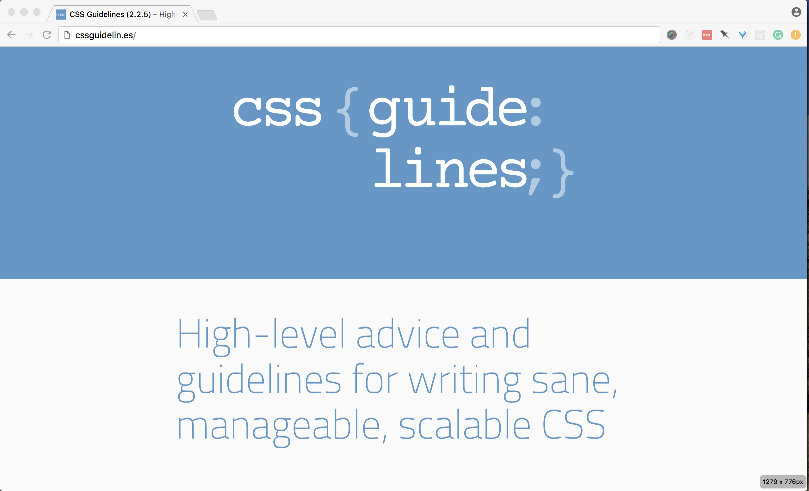
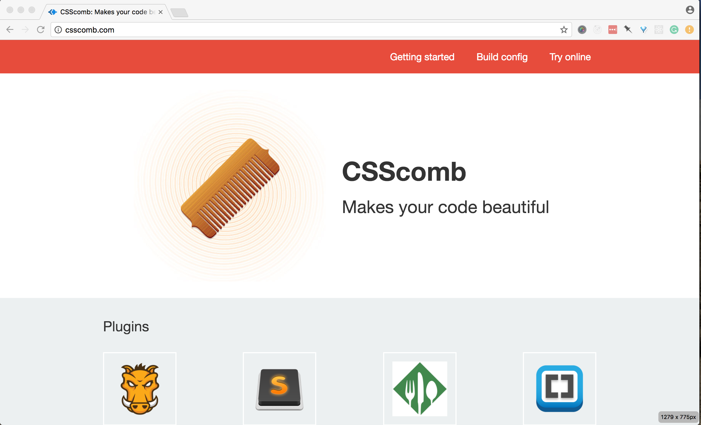
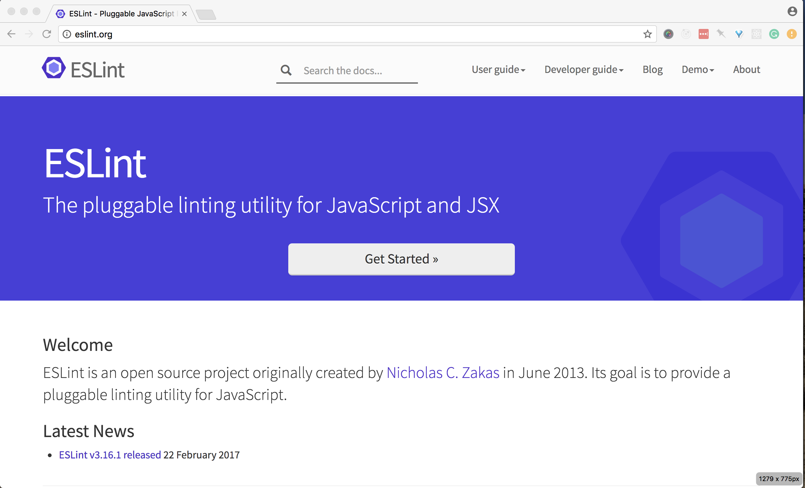

<!doctype html>
<html lang="en">
    <head>
        <meta charset="utf-8">
        <title>Patterns for Hiring</title>
        <link rel="stylesheet" href="./css/reveal.css">
        <link rel="stylesheet" href="./css/theme/black.css" id="theme">
        <link rel="stylesheet" href="./css/highlight/zenburn.css">
        <link rel="stylesheet" href="./css/print/paper.css" type="text/css" media="print">

    </head>
    <body>

        <div class="reveal">
            <div class="slides"><section  data-markdown><script type="text/template">

# Patterns for Hiring Leads & Candidates

Claudina Sarahe, @itsmisscs

<aside class="notes"><p>Important for both hiring managers and for us as developers and workers. In short,this is an area where I think everyone should be involved and care because it is a pivotal backbone to the culture and environment. We spend so much of our lives at work. Processes...institutions.</p>
</aside></script></section><section  data-markdown><script type="text/template">
# v much not an expert

<aside class="notes"><p>these experiences from few years hiring at high growth startup
coupled with learnings from organizing and colleagues.</p>
</aside></script></section><section  data-markdown><script type="text/template">
# Roundtable and Chat

Take a 10-15 minute break after the talk

<aside class="notes"><p>Do something different. Challenge us here as we gather. Keep your questions and jot them down. Break. Drinks. Food. Circle up chairs. Discussion / QA.</p>
</aside></script></section><section  data-markdown><script type="text/template">
# Outline

* Global: Hiring leads + team <!-- .element: class="fragment" data-fragment-index="1" -->
* Candidate level <!-- .element: class="fragment" data-fragment-index="2" -->
* Hiring leads <!-- .element: class="fragment" data-fragment-index="3" -->
</script></section><section ><section data-markdown><script type="text/template">
## Sustaining inclusive and diverse teams begin with inclusive processes within

<aside class="notes"><p>You are what you eat adage holds true. I believe that an
in order to have an enjoyable hiring that yields diverse, inclusive, creative,productive teams you must</p>
</aside></script></section><section data-markdown><script type="text/template">
## Bring the team into the process

### Be open and participatory

<aside class="notes"><p>If you have a hiring process or are putting in a more formal one, start by inviting those that want to be a part of it</p>
</aside></script></section><section data-markdown><script type="text/template">
## Form hiring teams/committees

### Share the process back to the whole team
</script></section><section data-markdown><script type="text/template">
## Establish core tenets

What qualities do you most value in a code and in a candidate?

* Simplicity <!-- .element: class="fragment" data-fragment-index="1" -->
* Consistency <!-- .element: class="fragment" data-fragment-index="2" -->

<aside class="notes"><p>Set these up early. Invite the whole team to be a part of it. Core tenets can function both as code and person</p>
</aside></script></section><section data-markdown><script type="text/template">
## Framework agnostic
### Tenet: Simplicity

Core languages of our craft: JS, CSS, HTML

<aside class="notes"><p>We valued JS, CSS, HTML. I stand that a good developer can and will know everything. Specialist are necessary. If you need a specialist, then test for that specialization.</p>
</aside></script></section><section data-markdown><script type="text/template">
## Establish guidelines for the role

Sets expectations for the candidate and your team

* What are some of the tasks this person will be doing? <!-- .element: class="fragment" data-fragment-index="1" -->
* Are you hiring for a specific project? What happens after it ends? <!-- .element: class="fragment" data-fragment-index="2" -->
* Are you filling a specific need? <!-- .element: class="fragment" data-fragment-index="3" -->

<aside class="notes"><p>Doing this may help you realize you need to define current team roles and responsibilities</p>
</aside></script></section><section data-markdown><script type="text/template">
## Establish guidelines for your process

* What are the steps in the process? (Phone screen, code, in person)<!-- .element: class="fragment" data-fragment-index="1" -->
* Whose going to participate in each step? Are the positions fixed?<!-- .element: class="fragment" data-fragment-index="2" -->
* What tools are we going to use? (Greenhouse)<!-- .element: class="fragment" data-fragment-index="3" -->
* How are we going to control against bias?<!-- .element: class="fragment" data-fragment-index="4" -->

<aside class="notes"><p>Key is that everyone is aware of process. Hiring is a huge load. Spread it as much as possible.</p>
</aside></script></section></section><section  data-markdown><script type="text/template">
# First touch matters

<aside class="notes"><p>For us, phone Put someone the phone that cares, will listen, make conversation, and is invested in learning about that person.</p>
</aside></script></section><section ><section data-markdown><script type="text/template">
## Become friends with talent team

<aside class="notes"><p>You need to collaborate. If you don&#39;t want to be on the phone, help them screen candidates by providing questions they can ask. Greenhouse for notes.</p>
</aside></script></section><section data-markdown><script type="text/template">
## Candidate interview profile

<aside class="notes"><p>Not everyone interviews well. This can either come directly via form sent to candidates or through references. Some ideas</p>
</aside></script></section><section data-markdown><script type="text/template">
## Questions for candidate profile

* Do you prefer morning or afternoon interviews?<!-- .element: class="fragment" data-fragment-index="1" -->
* Would you prefer in person or remote for your first conversation?<!-- .element: class="fragment" data-fragment-index="2" -->
* Do you have any needs we can assist with, such as an energy so to minimize walking?<!-- .element: class="fragment" data-fragment-index="3" -->
</script></section><section data-markdown><script type="text/template">

## What's your Preferred Gender Pronoun (PGP)?


</script></section></section><section  data-markdown><script type="text/template">

# Be real about right fit later

<aside class="notes"><p>So many people I wanted to hire but needed to wait until there was stability. Be sincere about this by working with TS to keep in touch. As canddiate, if you really liked it, follow up, even if you do get a job. If no movement after 6 months, tell candidate.</p>
</aside></script></section><section  data-markdown><script type="text/template">
## Provide Feedback. Get Feedback.

<aside class="notes"><p>Hiring leads you must be willing to provide feedback so TS send out. Be prepared to offer. Call candidates you personally connected with. Candidates, ask for feedback. What&#39;s one things I could improve on my test? If tenets, feedback becomes really easy to give.</p>
</aside></script></section><section ><section data-markdown><script type="text/template">
# Thoughts for Candidates
</script></section><section data-markdown><script type="text/template">
## Define your tenets
### What do you want out of the position?

<aside class="notes"><p>What do you want to get out of the job? clear: room to grow, better process; for a new dev could be get a job on respectful teams</p>
</aside></script></section><section data-markdown><script type="text/template">
## Ask about day to day

* What's the process for a typical feature or sprint?<!-- .element: class="fragment" data-fragment-index="1" -->
* How do you spend your day?<!-- .element: class="fragment" data-fragment-index="2" -->
* What does a typical day for team member look like?<!-- .element: class="fragment" data-fragment-index="3" -->

<aside class="notes"><p>Ask about someone at your level and also ask above is you are looking to grow</p>
</aside></script></section><section data-markdown><script type="text/template">
## Care about your growth
### Ask about mentorship and career growth
</script></section><section data-markdown><script type="text/template">
* Pairing <!-- .element: class="fragment" data-fragment-index="1" -->
* Code review process <!-- .element: class="fragment" data-fragment-index="2" -->
* How are code decisions and standards formed? <!-- .element: class="fragment" data-fragment-index="3" -->
* Learning budget—encouraged to learn<!-- .element: class="fragment" data-fragment-index="4" -->
* Developer ratio (Junior to Senior)<!-- .element: class="fragment" data-fragment-index="5" -->
* Tech stack<!-- .element: class="fragment" data-fragment-index="6" -->

<aside class="notes"><p>A job for jobs sake will not help you. Signs to look for.</p>
</aside></script></section></section><section  data-markdown><script type="text/template">
## Preparing for code challenge

<aside class="notes"><p>All in the details. Areas. Pitfalls to pay attention to</p>
</aside></script></section><section ><section data-markdown><script type="text/template">
## Documentation
### Does your project include a `README.md`?

<aside class="notes"><p>how detailed does it get. if you do something different, note it. documentation helps people.</p>
</aside></script></section><section data-markdown><script type="text/template">
## Code documentation


JSDOC style syntax across all file types


</script></section></section><section ><section data-markdown><script type="text/template">
# Directory Organization

<aside class="notes"><p>Lots of patterns here. Here&#39;s good vs signs of lack of organization</p>
</aside></script></section><section data-markdown><script type="text/template">
## Common patterns

Within the root folder:

* Core code files: `src/` or `app/` <!-- .element: class="fragment" data-fragment-index="1" -->
* Compiled files: `dist`, `public/`, `build/` <!-- .element: class="fragment" data-fragment-index="2" -->
</script></section><section data-markdown><script type="text/template">
### Example: Good Directory Structure

```
app
├── js
│   │── vendor/
│   │   ├── jquery.js
│   └── main.js
├── css
│   └── main.css
├── views
│   └── index.html
├──
dist
├── // compiled assets

```
</script></section></section><section ><section data-markdown><script type="text/template">
# Code Consistency

* Spacing <!-- .element: class="fragment" data-fragment-index="1" -->
* Indentation<!-- .element: class="fragment" data-fragment-index="2" -->
* Stale code (e.g. commented out)<!-- .element: class="fragment" data-fragment-index="3" -->
</script></section><section data-markdown><script type="text/template">
# CSS Linters & Style Guides
</script></section><section data-markdown><script type="text/template">
### Harry Roberts, CSS Guidelines


</script></section><section data-markdown><script type="text/template">
## Hugu G, Sass Guidelines


</script></section><section data-markdown><script type="text/template">
## MDO, Code Guide


</script></section><section data-markdown><script type="text/template">
## Stylelint


</script></section><section data-markdown><script type="text/template">
## csscomb


</script></section><section data-markdown><script type="text/template">
## Other CSS/Sass Linters

* [Sass-lint](https://github.com/sasstools/sass-lint)
* [SCSS Lint](https://github.com/brigade/scss-lint)
</script></section><section data-markdown><script type="text/template">
## JS Linters

* Plugins available for most editors
</script></section><section data-markdown><script type="text/template">
## ESLint



<aside class="notes"><p>Pluggable different standards</p>
</aside></script></section><section data-markdown><script type="text/template">
## AirBnb Code Standards


</script></section><section data-markdown><script type="text/template">
## Lots of standards

* [JS Standard](https://github.com/feross/standard)
* [Google](https://github.com/google/eslint-config-google)
</script></section><section data-markdown><script type="text/template">
# Naming

* Clear, concise, patterns <!-- .element: class="fragment" data-fragment-index="1" -->
* Remix from other frameworks <!-- .element: class="fragment" data-fragment-index="2" -->

<aside class="notes"><p>Check out semantic UI or frameworks for ideas. visit sites you like.</p>
</aside></script></section></section><section ><section data-markdown><script type="text/template">
## Command & Understanding of HTML

* Are you using more semantically appropriate element? <!-- .element: class="fragment" data-fragment-index="1" -->
* Is accessibility a fore or afterthought? <!-- .element: class="fragment" data-fragment-index="2" -->
</script></section><section data-markdown><script type="text/template">
## Know your tags

```
<div class="price">
  ${{ price }}
</div>
```
</script></section><section data-markdown><script type="text/template">
## Answer: Daily Double

```
<output for="price-field" name="price" class="price">
  ${{ price }}
</output>
```

Represents the result of a calculation or user action.

<aside class="notes"><p>Okay. Esoteric. But this isn&#39;t..</p>
</aside></script></section><section data-markdown><script type="text/template">
```
<div class="btn">
  Get it
</div>
```

## `<div>` is not `<button>`
</script></section><section data-markdown><script type="text/template">
## HTML is more than divs

```html
<div class='item'>
  <div class='item__name'>
    {{ name }}
  </div>
  <div class='item_description'>
    {{ description }}
  </div>
  <div class='item_price'>
    {{ price }}
  </div>
  <div class='item__purchase' data-name='{{ name }}' data-price='{{ price }}'>
    <div class='btn'>
      Get it
    </div>
  </div>
</div>
```
</script></section><section data-markdown><script type="text/template">
```html
<article class='item'>
  <h2 class='item__name'>
    {{ name }}
  </h2>
  <p class='item_description'>
    {{ description }}
  </p>
  <output for="price-field" name="price" class="price">
    ${{ price }}
  </output>
  <div class='item__purchase' data-name='{{ name }}' data-price='{{ price }}'>
    <button class='btn'>
      Get it
    </button>
  </div>
</article>
```
</script></section><section data-markdown><script type="text/template">
# CSS

* Understanding of specificity <!-- .element: class="fragment" data-fragment-index="1" -->
* CSS Architecture<!-- .element: class="fragment" data-fragment-index="2" -->
* Organization<!-- .element: class="fragment" data-fragment-index="3" -->
* Style<!-- .element: class="fragment" data-fragment-index="4" -->
</script></section><section data-markdown><script type="text/template">
## Over-qualifying elements

```
button.delete {

}
```
</script></section><section data-markdown><script type="text/template">
## Empty Rule Sets

```
.price {
}
```
</script></section><section data-markdown><script type="text/template">
## Unit consistency or pattern

```
.sidebar {
  margin-left: 3%;
  padding: 1.5em 40px;
}
```
</script></section><section data-markdown><script type="text/template">
## CSS Architecture

* SMACSS <!-- .element: class="fragment" data-fragment-index="1" -->
* BEM <!-- .element: class="fragment" data-fragment-index="2" -->
* CSS Modules <!-- .element: class="fragment" data-fragment-index="3" -->
* ITCSS <!-- .element: class="fragment" data-fragment-index="4" -->
* ExpressiveCSS <!-- .element: class="fragment" data-fragment-index="5" -->
* FunctionalCSS <!-- .element: class="fragment" data-fragment-index="6" -->

<aside class="notes"><p>some are more about styles and less prescriptive about organization. others are more coupled.</p>
</aside></script></section><section data-markdown><script type="text/template">
## Solve problem at hand first
### before adding complexity
</script></section><section data-markdown><script type="text/template">
## Setup your own simple build process

* Process your CSS <!-- .element: class="fragment" data-fragment-index="1" -->
* Transpile your JavaScripts <!-- .element: class="fragment" data-fragment-index="2" -->
* Compile your HTML Templates <!-- .element: class="fragment" data-fragment-index="3" -->
</script></section><section data-markdown><script type="text/template">
# Gulp.js for making builds

* Easy to grok <!-- .element: class="fragment" data-fragment-index="1" -->
* Lots of tutorials and good content <!-- .element: class="fragment" data-fragment-index="2" -->
* More intuitive working with HTML templates <!-- .element: class="fragment" data-fragment-index="3" -->
</script></section><section data-markdown><script type="text/template">
### But isn't Webpack the thing?!?!

<aside class="notes"><p>If react job or JS heavy, sure. Any of the followign can work in either</p>
</aside></script></section><section data-markdown><script type="text/template">
## Autoprefixer for vendor prefixing

```css
@mixin box-sizing( $type: border-box ) {
    -webkit-box-sizing: $type;
       -moz-box-sizing: $type;
         -o-box-sizing: $type;
        -ms-box-sizing: $type;
            box-sizing: $type;
}

*,
*::before,
*::after {
  @include box-sizing(border-box);
}
```

<aside class="notes"><p>If you are using a build process, this is must @EXTRA Webpack way vs gulp way.</p>
</aside></script></section><section data-markdown><script type="text/template">
```css
@mixin box-sizing( $type: border-box ) {
  box-sizing: $type;
}

*,
*::before,
*::after {
  @include box-sizing(border-box);
}
```
</script></section><section data-markdown><script type="text/template">

## Avoid coupling HTML + JS

```
$(".cart .count").html(count);
$(".cart .total").html(total);
```

<aside class="notes"><p>Going to refactor.... better</p>
</aside></script></section><section data-markdown><script type="text/template">
## Use JS Selectors

```
$(".js-cart .js-count").html(count);
$(".js-cart__count").html(count);
```
</script></section><section data-markdown><script type="text/template">
# Add linters to your code editors
</script></section><section data-markdown><script type="text/template">
# Keep up with the Industry

<aside class="notes"><p>Scientiest doesn&#39;t keep up with research in their field. They will become obsolete</p>
</aside></script></section><section data-markdown><script type="text/template">
## Find your method

* Digest Lists & Newsletter
* Podcasts
* Meetups
* Conferences
* Twitter accounts and lists
* Slack groups
* Medium

<aside class="notes"><p>Volunteer at conferences.</p>
</aside></script></section><section data-markdown><script type="text/template">
## Hack the industry pulse

* Bleeding edge. Hottest. (0-18 months)
* Best practices (3+ years)
* What’s on the mind of the community?
</script></section><section data-markdown><script type="text/template">
## Test your code before submitting
### Dreaded `-g`

* Wipe your node modules
* Re-install node version
* Ask a friend to try out
</script></section><section data-markdown><script type="text/template">
## Manage node

* nvmrc
* n
</script></section></section><section  data-markdown><script type="text/template">
## Give credit were it is due
### We all copy pasta

<aside class="notes"><p>Include license files or mentions in code comments. Add mention in your
readme. This also shows that you keep up.</p>
</aside></script></section><section  data-markdown><script type="text/template">
## Does it work?

### Depends ;)


<aside class="notes"><p>Seniors (must work)  and mid-levels. recap should flag it. hopefully discussed in the interview</p>
</aside></script></section><section ><section data-markdown><script type="text/template">
## Thoughts for Hiring Leads
</script></section><section data-markdown><script type="text/template">
## Drive & Passion
### Look for this quality
</script></section><section data-markdown><script type="text/template">
* Why are you looking to leave your current position? <!-- .element: class="fragment" data-fragment-index="1" -->
* What do you like to do when you aren’t coding (and the answer can be coding)<!-- .element: class="fragment" data-fragment-index="2" -->
* Tell me about a project or moment you were most proud of in the last year<!-- .element: class="fragment" data-fragment-index="3" -->
</script></section><section data-markdown><script type="text/template">
# `recap.md`

* What went well? <!-- .element: class="fragment" data-fragment-index="1" -->
* What would you improve given/more time resources?<!-- .element: class="fragment" data-fragment-index="2" -->
* Do you have any feedback on the challenge (what would you change, improve, keep…)?<!-- .element: class="fragment" data-fragment-index="3" -->

<aside class="notes"><p>Anecdote—story about how got this from a candidate. These are great way to provide more perspective about the work of the candidate</p>
</aside></script></section></section></div>
        </div>

        <script src="./lib/js/head.min.js"></script>
        <script src="./js/reveal.js"></script>

        <script>
            function extend() {
              var target = {};
              for (var i = 0; i < arguments.length; i++) {
                var source = arguments[i];
                for (var key in source) {
                  if (source.hasOwnProperty(key)) {
                    target[key] = source[key];
                  }
                }
              }
              return target;
            }

            // Optional libraries used to extend on reveal.js
            var deps = [
              { src: './lib/js/classList.js', condition: function() { return !document.body.classList; } },
              { src: './plugin/markdown/marked.js', condition: function() { return !!document.querySelector('[data-markdown]'); } },
              { src: './plugin/markdown/markdown.js', condition: function() { return !!document.querySelector('[data-markdown]'); } },
              { src: './plugin/highlight/highlight.js', async: true, callback: function() { hljs.initHighlightingOnLoad(); } },
              { src: './plugin/zoom-js/zoom.js', async: true },
              { src: './plugin/notes/notes.js', async: true },
              { src: './plugin/math/math.js', async: true }
            ];

            // default options to init reveal.js
            var defaultOptions = {
              controls: true,
              progress: true,
              history: true,
              center: true,
              transition: 'default', // none/fade/slide/convex/concave/zoom
              dependencies: deps
            };

            // options from URL query string
            var queryOptions = Reveal.getQueryHash() || {};

            var options = {"transition":"slide"};
            options = extend(defaultOptions, options, queryOptions);
            Reveal.initialize(options);
        </script>
        
    </body>
</html>
